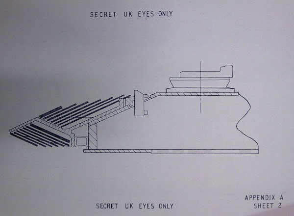
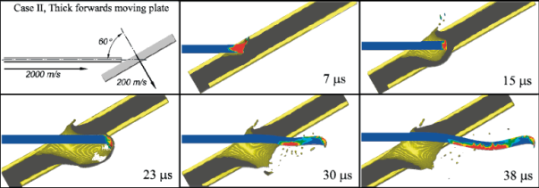
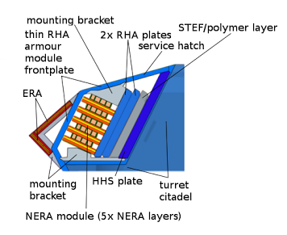
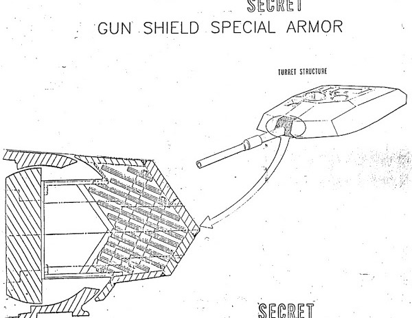

二戰期間的坦克炮塔裝甲，材質很簡單，就是鋼。針對大批量生產方便而設計的美蘇坦克，如Sherman和T-34，采用最容易的鑄造法；它的好處是可以形成複雜的形狀，利用傾斜面產生側向切力（又稱剪應力）來彈飛入射的炮彈，缺點是强度較低。德國則使用平面的焊接鋼板，所以可以進行各式强化處理，這種熱軋强化的鋼板，叫做Rolled Homogeneous Armor（RHA，硬度大約是300+BHN，Brinell Hardness Number，高於鑄造鋼的200+BHN），後來成爲一切坦克裝甲强度的測量標杆。
二戰後，蘇聯繼續使用鑄造炮塔，北約陣營則較早接納了德國的焊接式裝甲炮塔。但是不論鑄造或焊接，全鋼結構有其極限，平均厚度增加到了200毫米以上，重量就已開始不胜负荷（當然炮塔正面會更厚些，例如早期型的T-72，炮塔正面的鑄造鋼裝甲厚度為350毫米）。於是在1960年代末期，英國和德國分別開發了兩種獨立的新技術，都在1969年定型投產，前者一般叫做Chobham Armor，後者則是反應裝甲（Reactive Armor）。

這是應用在Chieftain（酋長式）坦克炮塔的第一代Chobham Armor，可以看出它的主要特徵是一系列傾斜排列的Spaced Armor Plates（空隙裝甲板），其防護力來自多層大角度傾斜面，對入射彈丸（APFSDS，穿甲彈）或高溫射流（HEAT，破甲彈）多次施加側向切力。每個裝甲板並不是單純的鋼，而是由幾層不同的材料形成的夾板，所以Chobham Armor被宣傳是一種複合裝甲，其實這些非鋼材質只是次要的改進，主要的防護性能來自它的幾何結構。除了熱軋鋼之外，最早版本的空隙裝甲板還包括了玻璃纖維板來增靭減重和鋁板來抑制破片（Spalling）。後來的版本才用上了陶瓷材料（Ceramics），或甚至貧鈾（Depleted Uranium）。

最早的反應裝甲是爆炸式（Explosive Reactive Armor，ERA），圖中顯示它的作用原理，也就是用兩片熱軋鋼包著鈍性炸藥，當穿甲彈或破甲彈穿入裝甲時，炸藥爆炸，將前後兩片鋼板向外推出，對入射彈丸或高溫射流施以極强的側向切力，藉以扭曲或切斷入射物。它的缺點是只能在裝甲的最外層使用一次。
冷戰期間，北約諸國的軍工部門有很緊密的技術合作，所以英德兩國彼此交換了心得之後，德國人將兩者融會貫通，開發出又一型新式的設計，就是非爆炸式反應裝甲（Non- Explosive Reactive Armor，NERA）。其原理是在Chobham Armor的空隙裝甲板之間，填入橡膠類的彈性材質。當入射彈擊中裝甲板的時候，裝甲板（和受熱膨脹的橡胶）先壓縮後面的橡膠層，然後反彈回來，產生更大的側向切力。NERA的側向力不如ERA，但是强於空隙裝甲，而且可以多層佈置，適合裝甲的内層。

這是巴基斯坦軍方泄露的Al Khalid改進型坦克（即VT-1A）炮塔裝甲結構，代表著中國坦克工業在90年代後期的第一代複合裝甲設計，應該和96A式的裝甲設計基本一致。共軍在80年代，通過外交通道引進了兩輛Leopard II坦克，因而獲得了德系NERA和ERA技術。同時也通過非正式通道引進了幾輛蘇製的T-72坦克，獲得了蘇聯的玻璃纖維裝甲（即圖中的STEF）技術。HHS是High Hardness Steel，高硬度鋼，硬度可能在600BHN左右。最新的99A式和15式坦克，則應該已經應用了陶瓷材料。

這是美國M1坦克的炮盾裝甲解析圖。空隙裝甲板之間的小塊支撐物可能有彈性設計，但是也可能只是簡單的支撐架。美軍的裝甲改進，主要依賴新材料，如前面提過的陶瓷和貧鈾，和德系的動力性設計哲學不同。
Siliconnections
2017-09-12 00:00
1986到87年间，分派到金防部战车群服役，那时外岛配置的是25吨重的M41A3轻型战车，虽然早已是老爷战车，妥善率还不错。我对战车装甲没有任何研究，但因为和战车共度一年半的时光，所以也有一些实务上的了解。
那一年，我在金西師炮兵營當少尉觀測官，隔壁就是著名的金門軍中樂園，有時我會帶隊到去幫他們掃路。
Siliconnections
2017-09-12 00:00
原来版主是炮兵观测官! 当时的编制，每个战车连14部战车中，仅次于连长车的第二部车就是炮观车(炮兵前进观测官的战车)，可见炮兵和战车的协同作战多么重要。
我只和步兵協同演習過一次，兩天一夜，在冬天野地裏露天睡了一晚。第二年師部發現我是全師最大的書呆子，調我過去寫情報研究。
evergrand
2017-09-12 00:00
据称美国海军各类舰艇服役前都要做毁伤实验，不知道陆军、空军装备有没有类似的试验，王老师有这方面咨询介绍一下吗？
只有海軍如此。
现代的陆战因为大型武器的长射程和火力惊人, 还有来自空中的攻击, 所以我在以前类似的讨论中就提过; 不管攻防, 疏散的队形是保障战场存活的第一要素.
坦克在野戰，還是非常可怕的，可以在一般步兵的視距/射程之外開火，同時隨行的步兵戰車從側翼迂迴。一旦火力壓制/打擊有了成效，所有戰鬥車輛進行高速突擊，近距離消滅殘餘的敵方兵力。
MR EDWIN
2017-09-17 00:00
坦克作为一个靠脸抗揍的武器又偏偏依赖于过于脆弱的传感器来维持基本战斗能力，这真是非常矛盾的，而且未来的双人制无人炮塔坦克发展一定是更加依赖密集的传感器和电子系统堆积。以后会不会出现一发105榴弹击中炮塔之后，坦克毫发无伤的丧失战斗能力退出战场。
別說105毫米直接命中，炮塔頂部20毫米左右的裝甲根本擋不住。美國軍方做過研究，只要是60毫米以上的榴彈在附近空炸，就足以摧毀觀瞄設備，使坦克退出戰鬥。
MR EDWIN
2017-09-18 00:00
坦克的观测手段应该像五代机的学习，让车长驾驶员带着苍蝇头，直接看穿天花板。车长可以用头瞄锁敌射击，把所有信息整合到头显里，驾驶直接像用ar玩开车游戏一样开坦克。只不过这就更依赖遍布车体的传感器和电子系统了，以后的坦克可能战斗力是上去了，但当真是变成了摸不得的瓷器。。
只要坦克做合理的機動，要用曲射武器打擊它，還是有相當難度的。
Siliconnections
2017-10-04 00:00
以前在坦克炮塔室里，看到大约70几枚战车炮弹很巧妙的配置于坦克底盘，围绕着炮塔室四周，所以无论炮塔怎么转，装填手(loader)都可以很容易取得炮弹装填。刚刚了解 M1 的弹药全部装在炮塔后部，上网一查也只能放 42 枚炮弹，感觉这样的配置并没有很好(1.弹药集中于一处, 2.容量有限)。但我想这样的设计一定有其原因，能否请版主说明一下。
主要是如果殉爆，炮塔中間有裝甲隔板，爆炸力直接向上發散，不會對坦克主體結構有大的損害。如果是配置在底盤上，一旦殉爆，不但無人生還，而且炮塔會被爆炸力掀開，這輛坦克就是個Total Loss。
Siliconnections
2017-10-12 00:00
谢谢版主的说明。另外一个问题是关于坦克的重量。重型坦克看起来刀枪不入，雄壮威武，但其实很笨重。长距离移防用铁路运输，但是铁轨，桥梁的承重，车站是否有办法上下铁皮，都必须考虑。短距离移防就直接开过去，但以我过去(过时)的经验，坦克移防时，即使履带全部上履带胶块，小心翼翼，以不超过每小时25公里的速度缓缓移防，还是很可能压坏路面或路基。
正確的用法是靠專運坦克的拖車；不過共軍一般靠鐵路做長途運輸，所以拖車沒有普及。
Siliconnections
2017-12-09 07:56
現在才看到 Professor Senile 的留言，原來您當時是在「大膽擔大擔，島孤人不孤」的大膽島，失敬失敬!
因爲“金門之熊”的歷史性影響，國軍至今仍然計劃讓坦克開上灘頭，做反登陸作戰，但是共軍早已不是“小米加步槍”的純輕裝步兵了。
2017-12-09 08:30 回复
王先生,最近台南市的立委王定宇說國軍單兵可以攜紅隼反坦克飛彈炸毀99式坦克,您怎麼看呢?當然已經有很多島內名嘴對其駁斥了.另外您對於台灣最新的國防報告書有甚麼看法呢?
可笑之極。單兵火箭彈連59式都打不穿，這只是又一個送國軍士兵去死的高招。
臺灣已經完全喪失專業精神了，什麽報告書根本就是政治宣傳品。
2018-01-03 11:34 回复
请教一下
長杆穿甲彈的尖銳彈帽是空心的鋼殼，純粹用來減低風阻；鈾或鎢做的長杆前端是平的，不會被傾斜裝甲彈開。
2020-06-18 14:30 回复
等效厚度一樣的話，裝甲板的體積和重量也會是一樣的，那麽還不如做成一個近於垂直的平面，可以減少容易裂開的焊縫。
至於冷戰結束前後開始流行的楔形裝甲，中俄的用意是爲了加裝ERA；英美不用ERA，空隙裝甲/NERA就只包裝在垂直平板之内。德國路綫不太一樣：豹二原本走英美的路綫，到了A5改進型，又在外部加裝了一層薄薄的空心楔形裝甲，它的作用類似單層的空隙裝甲，雖然側向力相對較小，但是因爲和主裝甲之間有較大的距離，給予入侵的長杆彈足夠的時間來翻騰，讓杆軸指向偏離飛行方向，進一步減低穿甲能力。
2020-06-19 01:59 回复
最近央视拍摄的纪录片公开了15式坦克炮塔的焊接工厂与焊接过程，于是有一大批人看到炮塔钢板很薄之后开始鼓噪15式只能防30mm机炮了，真的令人无语
美國網站也很開心地報導了。我想它的設計是模塊化的，只憑一點視頻遠遠不足以下結論。
2021-01-20 06:55 回复